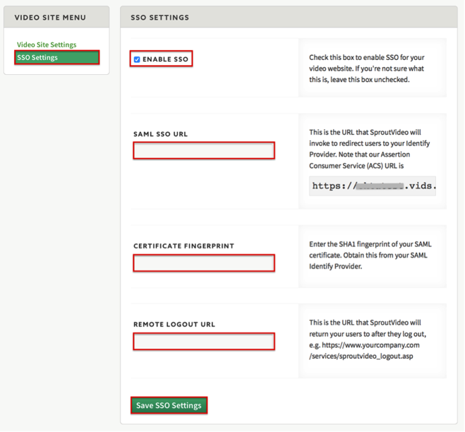

Sign in to your SproutVideo account as the administrator.
Navigate to Site > Settings > SSO Settings and enter the following (screen shot at end of step for reference):
Check the ENABLE SSO box.
SAML SSO URL: Copy and paste the following:
Sign into the Okta Admin Dashboard to generate this variable.
CERTIFICATE FINGERPRINT: Copy and paste the following:
Sign into the Okta Admin Dashboard to generate this variable.
REMOTE LOGOUT URL: Copy and paste the following:
Sign into the Okta Admin Dashboard to generate this variable.
Click Save SSO Settings

Done!
Notes:
IdP-initiated flows, SP-initiated flows, and Just In Time (JIT) provisioning are all supported.
For SP-initiated flows:
Go to https://[YourSubDomain].vids.io/